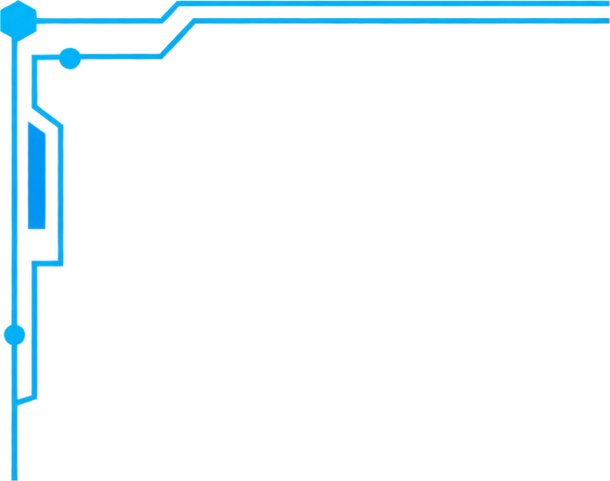
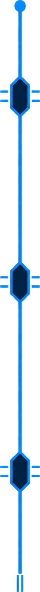
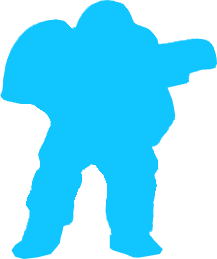
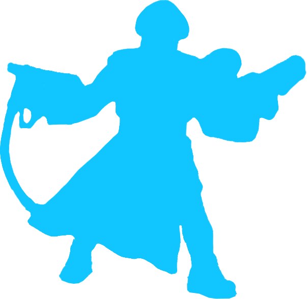
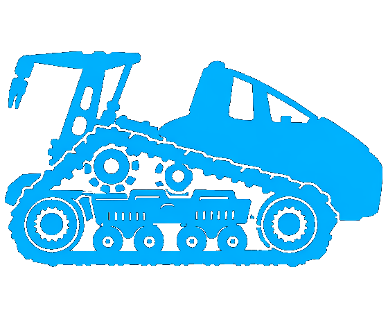

1
2
3
4
5
6
7
8
9
10
11
12
13
14
15
16
17
18
19
20

Глобал Петролеум
Подготовка
Стартовый регион: Европа
Очередь: 03.0 · Запас нефти: 8
1 фабрика под контролем и 6 рекрутов в стартовом регионе. 12 жетонов “Нефтяная вышка” положите в резерв.
Создание БР “Шепард”
- У вас есть отряд в регионе без фабрики.
- Заплатите 4 нефти.
- “Шепард” появляется в этом регионе.
Создание БР “Чёрный вихрь”
- “Шепард” находится в регионе с контролируемой вами фабрикой.
- Заплатите 10 нефти.
- “Чёрный вихрь” появляется в этом регионе.
Добыча
Фаза получения ресурсов
Получите по 1 единице нефти за каждый регион, в котором есть жетон “Нефтяной вышки” и присутствует хотя бы один ваш отряд.
Боевое донесение
Постоянная
В конце действия любого игрока, а также в любой момент фазы получения ресурсов (в том числе после правила минимального запаса) или фазы влияния вы можете уничтожить своего полковника на поле (вернуть его в резерв) и получить 2 нефти.
Бурение
Действие. Стоимость: 2 нефти
Если “Шепард” находится в регионе без “Нефтяной вышки”:
• бросьте D6. Если значение на кубике равно или меньше, чем количество ваших отрядов в регионе (включая “Шепарда”), поместите в этот регион “Нефтяную вышку”;
• независимо от результата броска поместите в этот регион пехотинца или боевую машину стоимостью 2 или меньше, если у вас в резерве есть такой отряд.
Эффективность
Битва. Финал
Если “Чёрный вихрь” участвует в битве, то вы выбираете, какие результаты боя будут применены к какому из вражеских отрядов.
| Отряд | Кол-во | Стоим. | Сила | |
|---|---|---|---|---|
 Рекрут | Пехотинцы | 6 | 1 | 0 |
 Полковник |
1 | 3 | 0 | |
 ББМП “Саранча” | Боевые машины | 6 | 1 | n - 1 |
 Моторизированный десантник |
4 | 2 | n + 1 | |
| n — число отрядов этого типа в битве. Сила — на всю группу. | ||||
 “Шепард” | БР | 1 | 4 | 0 |
 “Чёрный вихрь” |
1 | 10 | n | |
| n — сила равна текущей стоимости оказания давления на треке Судного дня. | ||||